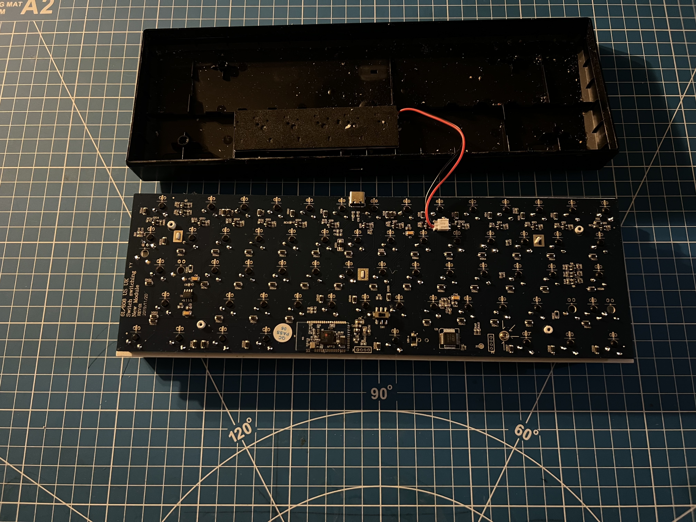
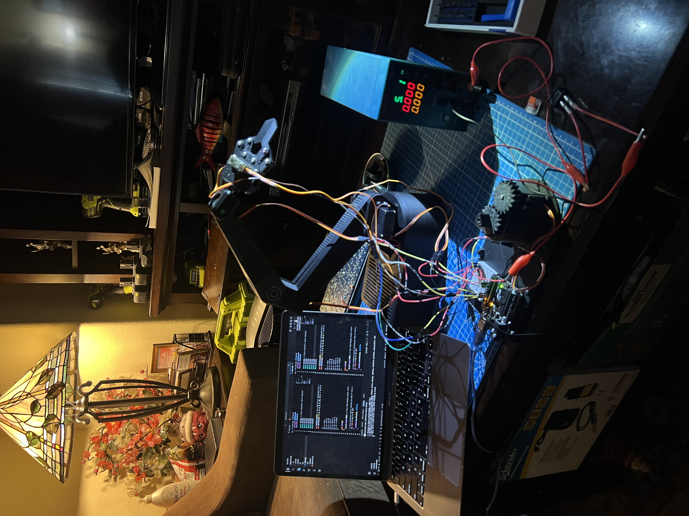
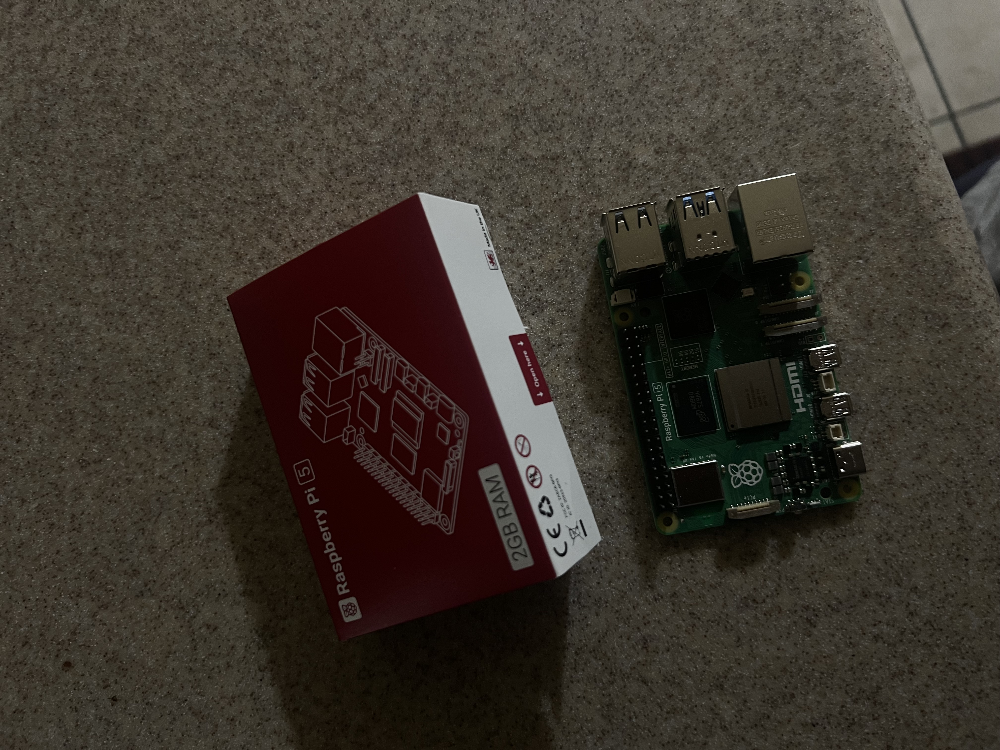

01 / HARDWARE
Custom Mechanical Keyboard
A from-scratch keyboard centered on schematic capture, USB-C, an ATmega32U4, switch-matrix design, ESD protection, decoupling, PCB layout, CAD, and design-for-manufacturing.
View project →Electrical Engineering · Computer Engineering · Robotics
I’m Kirk Brian Ventura, an electrical and computer engineering student focused on computer architecture, embedded systems, PCB design, and electronics. I have a long-term goal of going into the semiconductor industry.
Selected work
Here are a few of my favorite projects that combine electrical engineering, computer engineering, and mechanical design. Each project is a complete system with hardware, software, and mechanical components.

01 / HARDWARE
A from-scratch keyboard centered on schematic capture, USB-C, an ATmega32U4, switch-matrix design, ESD protection, decoupling, PCB layout, CAD, and design-for-manufacturing.
View project →
02 / MECHATRONICS
A mechanical and embedded controls project combining custom CAD, torque calculations, servo selection, electronics, C++, and iterative calibration of a multi-joint robotic arm. Currently in Version 1.0
View project →
03 / SYSTEMS
A custom phone design with a Raspberry Pi, touchscreen, and custom PCB. The monitor runs Linux and is designed to be a smart calendar with a custom interface.
View project →
04 / SYSTEMS
A custom PCB design of an FPGA, supporting software to run on the FPGA, and a RISC-V ecosystem to run on the FPGA. Alongside this, I'm making integrated circuts through Skywater 130 nm, focusing on Digital design primarily.
About
My work sits at the intersection of electrical engineering, computer engineering, and mechanical design. While I'm currently focused on electrical and computer engineering. I have strong mechanical design skills and experience with CAD, 3D printing, and mechanical systems.
I also bring hands-on electrical experience with power distribution, breakers, HVAC-related systems, single-line diagrams, three-phase systems, and P&ID documentation—experience that keeps my circuit work grounded in real physical systems.

MECHATRONICS
Includes previous experience in VEX Robotics (Team 9922Z) and FIRST Robotics Competition (Team 9534), including mechanical design, electrical wiring, and programming for competition seasons as well as relevant programming languages and skills.
View Skills →